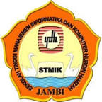

magister teknik informatika
program magister teknik informatika sarajana UNH JAMBI diarahkan kepada
hasil lulusan yang berbudi luhur berjiwa enterpreneur dan memiliki kualifikasi sebagai berikut:
1. kemampuan mearncang dan mengelolah proyek-proyek perangkat lunak
2. kemampuan menguasai aspek teknis dan pdan manajeman dari pemanfaatan teknologi informasi
3. kemampuan mengevaluasi dan menghadapi dampak dari teknologi informasi
4. kempuan mempunyai daya inovatif dalam menghasilkan jasa teknologi informasi
5. kempuan merancang, mengembangkan dan mengimpementasikan proyek dalam bidang media digital
| tahapan |
mata kuliah reguler |
| semester 7 |
analis and sistem design |
| design and netword management |
| sofware enginering |
| infomation system |
| data base management |
| praktikum aplikasi internet |
| praktikum dasar jaringan komputer |